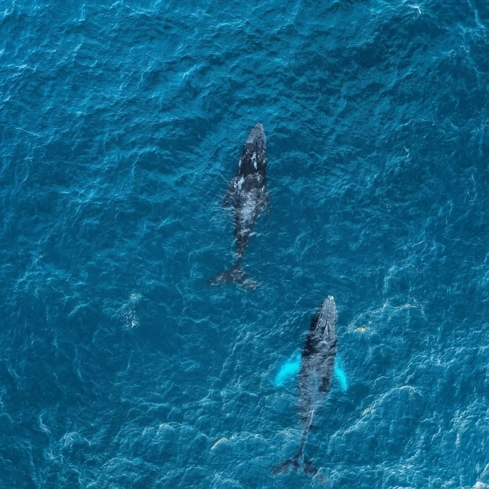
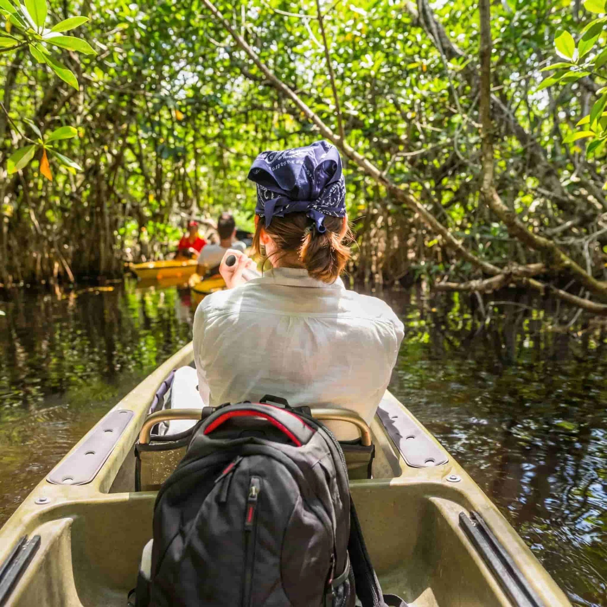
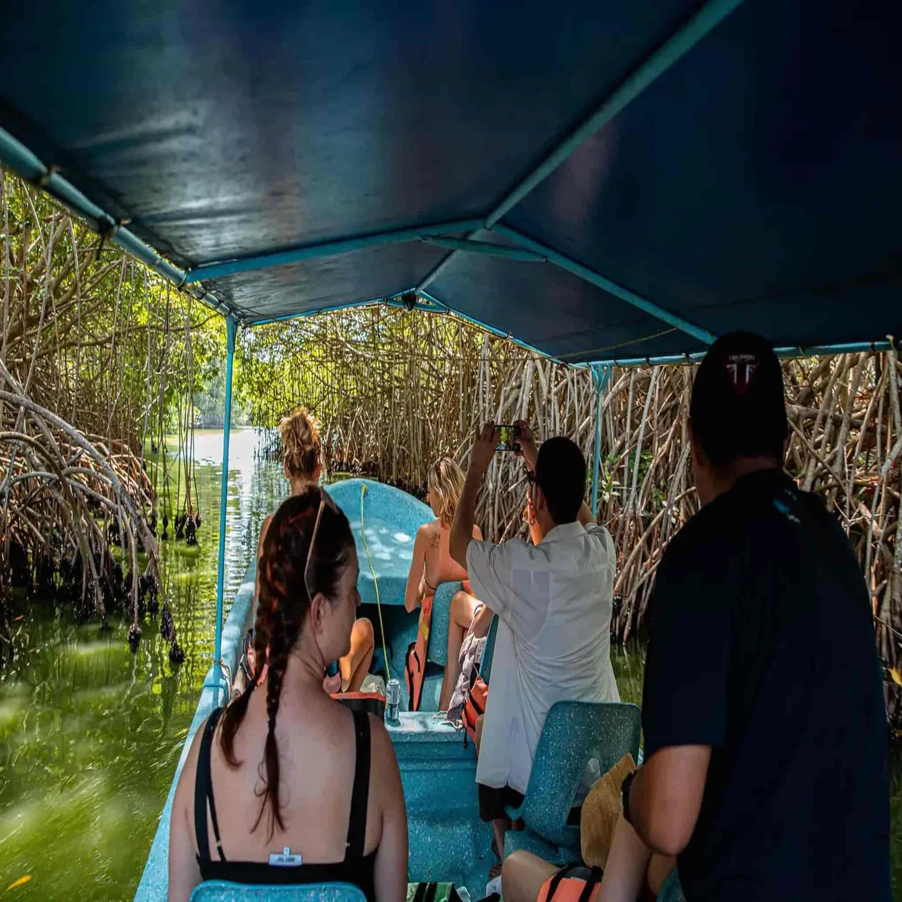
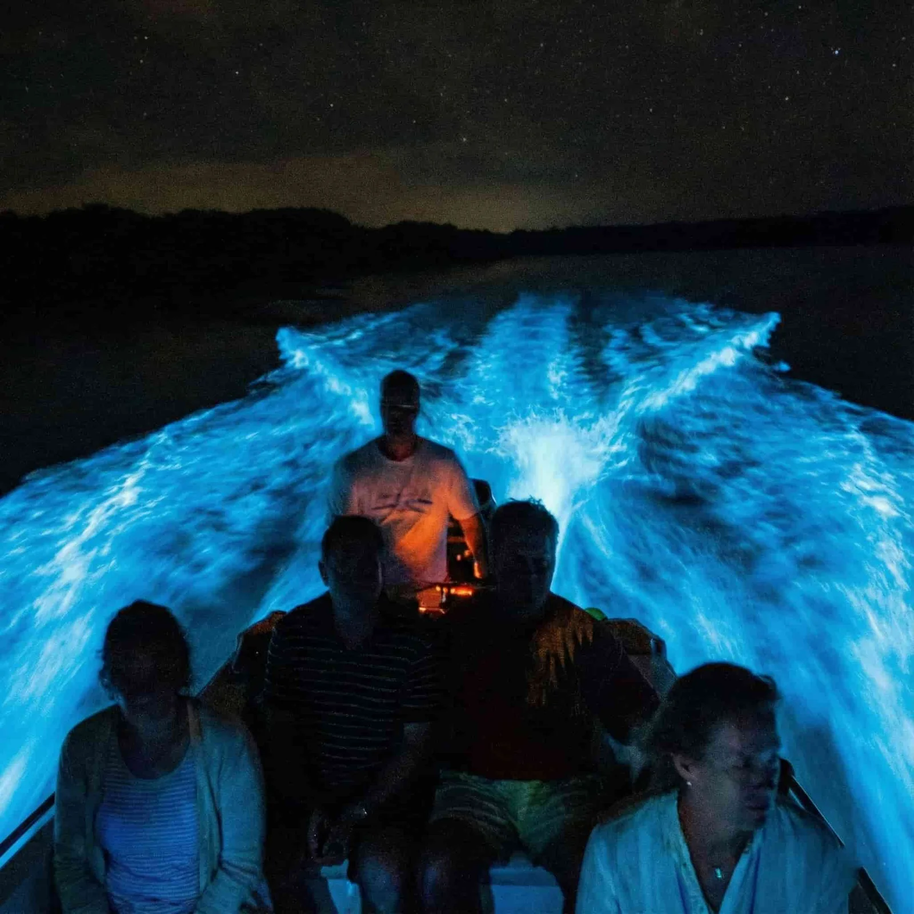

06:00

15°57′ N · 97°07′ O — LAGUNA DE MANIALTEPEC, OAXACA
Millones de dinoflagelados convierten cada brazada en luz azul. Está a 20 minutos de Puerto Escondido, y nosotros crecimos en su orilla.
Lectura de nuestros guías
Cada tarde, antes de zarpar, medimos el brillo, la luna y el agua. Si la noche no da, te lo decimos y reagendamos. Así de simple.
Nuestra Comunidad
No somos un mostrador de reventa: somos familias de Manialtepec y Chacahua. La laguna nos dio de comer antes de darnos trabajo, y eso cambia cómo se hace cada tour.
Capitanes y naturalistas con certificación oficial y toda una vida leyendo esta agua. No repiten un guion: te cuentan su casa.
Sin bloqueador ni repelente al nadar. Los dinoflagelados que crean la luz son frágiles, y preferimos la laguna encendida a la comodidad.
Parte de cada reserva va directo a los campamentos tortugueros oficiales. El avistamiento es ético: nunca perseguimos fauna.
Grupos pequeños operados por comunidades chatinas y familias locales. Tu viaje sostiene la economía de la costa, no una franquicia.
Experiencias destacadas
Seis experiencias ordenadas como las vive la costa: el mar despierta antes que tú, y la laguna se guarda lo mejor para el final.






La firma de la casa
Apagamos el motor en medio de la laguna. Metes la mano al agua y el agua responde con luz. Después, si quieres, nadas en ella. Nadie sale igual de esta.
Expediciones completas
Itinerarios que nuestros guías arman entre sí, con tiempos reales de traslado. El precio se cierra por WhatsApp según fecha y grupo.
Una noche
Atardecer navegando 13 km de manglar, fogata en Playa Puerto Suelo y cierre nadando en la bioluminiscencia.
La más reservada
Un día completo
Amaneces con delfines en mar abierto, remas manglares al mediodía y despides el día liberando una tortuga.
Dos días
Chacahua de día completo, cascadas de Copalita o aguas termales a elección, y bioluminiscencia de despedida.
Índice completo
¿No sabes cuál va contigo? Escríbenos y lo armamos juntos
Galería
"La bioluminiscencia en Manialtepec es algo que nunca olvidaré. Nuestro guía fue súper cuidadoso y nos explicó toda la ciencia detrás del fenómeno. El traslado desde Puerto Escondido fue impecable."
"The turtle release at sunset was an incredible experience. Booking via WhatsApp was super easy and fast. Very professional and environmentally conscious team."
"Hicimos el tour de Chacahua y fue espectacular. Los manglares, la comida y el atardecer en la playa. Ecoturismo 100% auténtico, seguro y responsable."
Antes de zarpar
Traslado en lancha con guías locales certificados por la Laguna de Manialtepec, chaleco salvavidas obligatorio y tiempo libre para nadar en el agua bioluminiscente. Al confirmar podemos coordinar tu transporte de ida y vuelta desde Puerto Escondido o Mazunte.
Sí. Todas nuestras experiencias son de nivel familiar, con chalecos para todas las edades y embarcaciones operadas por capitanes con años de experiencia y certificación de seguridad.
Porque el precio justo depende de la fecha, el tamaño del grupo y si combinas experiencias. Mandas tu solicitud por WhatsApp y respondemos con la mejor tarifa de ese día, descuentos de grupo si aplican y el método de pago que te acomode.
Para kayak y bioluminiscencia: traje de baño, toalla, ropa que se pueda mojar y calzado cerrado para agua. Importante: al nadar en la laguna no se permite bloqueador ni repelente químico — protegen tu piel, pero apagan la luz del ecosistema.
Reserva
Armas tu solicitud aquí, se abre tu WhatsApp con el mensaje listo, y te contestamos en minutos con precio y disponibilidad. Sin registros ni pagos por adelantado.